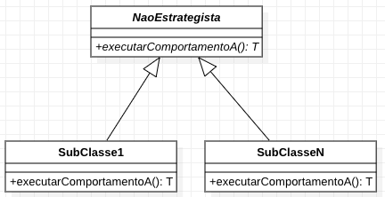
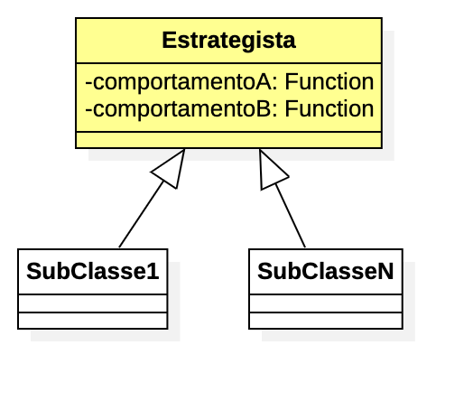

1. Strategy (Estratégia)
1.1. Definição
📘"O padrão Strategy define uma família de algoritmos, encapsula cada um deles e os torna intercambiáveis. A estratégia deixa o algoritmo variar independentemente dos clientes que o utilizam" [UCPP].
Em outras palavras, a partir de um conjunto de algoritmos, permite que classes possam trocar tais algoritmos por uma outra implementação, até mesmo em tempo de execução.
1.2. Aplicabilidade
Pode ser aplicado quando:
-
o comportamento de um método (implementação de um algoritmo) precisa ser diferente em classes distintas e/ou mudar em tempo de execução;
-
determinadas classes devem ter um comportamento específico (método) e outras não;
-
não deseja-se que uma alteração em uma super classe afete sub classes.
1.3. Modelagem do Padrão

A classe Estrategista é que que irá usar as estratégias, que são representadas pelas classes que implementam os comportamentos.
Cada comportamento (estratégia) é normalmente definido como uma interface. Assim, podem existir N implementações de cada comportamento (diferentes estratégias).
Perceba que a relação entre a Estrategista e os comportamentos não é herança, mas pode ser uma associação normal, composição ou agregação. Cada comportamento não é implementado como uma subclasse da Estrategista, cada tipo de comportamento estará contido como um atributo dentro da Estrategista. Por isso é comum representar como agregação/composição. Definindo o comportamento como atributo é que nos permite alterar em tempo de execução sua implementação.
O comportamento em si é definido por um método na interface. No exemplo, o método é executarComportamentoA() para o ComportamentoA. O nome do método é o desenvolvedor quem define, normalmente sendo um nome que faça sentido para o sistema.
A assinatura do método também é livre. Neste exemplo o método não recebe parâmetros e retorna um tipo genérico T. O tipo do retorno vai depender das suas necessidades. Veja os exemplos concretos na seção a seguir.
Podem existir diferentes classes filhas desta Estrategista, cada uma fazendo uso diferente do resultado de um determinado comportamento.
Com o padrão Strategy, o comportamento de qualquer classe (mãe ou filha) pode mudar em tempo de execução, de acordo com os requisitos do sistema.
Um projeto de exemplo para o diagrama apresentado está disponível aqui. Ele deve ser alterado para incluir as mudanças necessárias para o problema específico que você estiver resolvendo com o padrão.
1.4. Princípios utilizados
-
Programar para uma "interface" não uma implementação (GoF): declaramos variáveis com tipos abstratos (uma interface de comportamento) e usamos tipos concretos (uma classe que implementa um comportamento) apenas na instanciação.
-
Single Responsibility Principle (SRP) pois a classe que usa os comportamentos não tem a responsabilidade de implementar estes comportamentos. Adicionalmente, cada classe de comportamento é responsável por implementar um único comportamento. Se temos vários comportamentos, devemos ter várias classes.
-
Open/Closed Principle (OCP), pois separa as partes que mudam (os comportamentos) de dentro da classe que utiliza eles. Isto torna a classe "aberta para extensão e fechada para modificação" (em relação aos comportamentos).
-
Liskov Substitution Principle (LSP) pois podemos substituir um comportamento por qualquer implementação dele, de forma transparente, até mesmo em tempo de execução, sem que sejam necessárias alterações no código interno da classe que utiliza tais comportamentos.
-
Interface Segregation Principle (ISP), pois estamos definindo diferentes interfaces: uma para cada comportamento que pode ser implementado.
1.5. Exemplos
1.5.1. Leitura de arquivos de retorno de boletos bancários.
Arquivos de retorno são enviados pelos bancos às empresas, fornecendo uma lista de boletos pagos por clientes, para que tais empresas possam registrar o pagamento desses boletos em seus sistemas. Os bancos utilizam um arquivo de texto com campos de comprimento fixo, onde não existe um caractere delimitador. Cada campo tem uma quantidade fixa de caracteres. Se o valor possui menos caracteres do que deveria, o tamanho é completado com espaços em branco.
Um aplicação na empresa recebedora dos boletos deve ler tais arquivos para extrair os dados e normalmente gravar em um banco de dados. Existem diferentes formatos para tais arquivos e cada banco pode utilizar um formato diferente. Atualmente existem inúmeros projetos em diferentes linguagens para fazer a leitura de tais arquivos, /retorno-boletophp[como este]. Vamos implementar um solução simplificada aqui apenas para efeitos didáticos.
| Apesar de atualmente termos formatos de arquivos mais utilizados como JSON e XML, formatos como o mencionado ainda são bastante utilizados, principalmente no meio acadêmico, por serem simples. Um outro exemplo de tais formatos são os arquivos CSV. Mas em aplicações Web e mobile, o mais comum é o uso de JSON e XML. |
Para este exemplo, vamos considerar que o Banco do Brasil usa um tipo de arquivo onde cada linha com as informações sobre o pagamento de um boleto contém os seguintes campos, separados por ponto-e-vírgula:
-
id do boleto com 10 dígitos
-
código do banco onde o boleto foi pago (3 dígitos)
-
data vencimento (dd/mm/yyyy)
-
data pagamento (dd/mm/yyyy)
-
CPF do cliente (sem . e -)
-
valor do boleto (decimal 10.2)
-
multa por atraso (decimal 10.2)
-
juros no formato (decimal 10.2)
Mas digamos que você também precisa receber arquivos do Bradesco que possui o seguinte formato:
-
id do boleto com 10 dígitos
-
cód banco onde o boleto foi pago (3 dígitos)
-
*agência onde o boleto foi pago (6 dígitos)
-
*conta do cliente para possível estorno de pagamento (9 dígitos)
-
data vencimento (dd/mm/yyyy)
-
*data/hora pagamento (dd/mm/yyyy hh:nn:ss)
-
*CPF do cliente (com . e -)
-
valor do boleto (decimal 10.2)
-
multa por atraso (decimal 10.2)
-
juros no formato (decimal 10.2)
*Campos adicionais ou diferentes do formato anterior.
Um diagrama de classes para tal implementação pode ser como abaixo.

O código fonte com uma implementação de exemplo pode ser obtido aqui (zip). Tente primeiro fazer sua implementação a partir da leitura do diagrama, para depois analisar o código disponibilizado.
| Uma implementação em Node.js está disponível em retorno-boleto-js. |
1.6. Detalhes de Implementação
Mesmo que uma classe não tenha um determinado comportamento, como o definido pela interface ComportamentoA, haverá uma associação entre a classe e o comportamento.
Se a classe não precisar de uma implementação de tal comportamento, o atributo que representa a associação pode estar nulo. Ao tentar usar o comportamento é gerada a exceção NullPointerException.
Para resolver isso, podemos criar uma classe que tenha uma implementação vazia para o comportamento, ou seja, que não faz nada. Isto normalmente pode ser implementado pelo padrão Null Object que veremos posteriormente.
Se a classe estrategista é obrigada a ter um determinado comportamento,
para evitar NullPointerException, podemos não incluir um construtor sem parâmetros e incluir um que exija uma implementação de estratégia a ser usada.
2. Modelagem Convencional sem o padrão Strategy 🤔
A modelagem convencional de diferentes comportamentos sem a aplicação do padrão Strategy requer o uso de herança para os diferentes comportamentos e é visualmente mais simples. No entanto, tal implementação tem algumas características que podem ser um problema (ou não), dependendo dos requisitos do seu sistema, por não permitir:
-
alterar um comportamento em tempo de execução;
-
compartilhar implementações de um mesmo comportamento entre diferentes classes filhas, levando à duplicação de código (que deve ser evitado ao máximo);
-
combinar comportamentos distintos em um só, reaproveitando código.

3. Como NÃO implementar uma solução para um problema 😳
Se o padrão não for aplicado nem a solução com herança acima, uma outra solução normalmente é implementada por meio de uma única classe. Não será mostrado nem mesmo um diagrama, pois a solução seria composta de fato apenas por uma classe. Ela então teria métodos como T executarComportamentoA(). Todas as implementações deste "Comportamento A" seriam incluídas no método citado.
Para o exemplo do retorno de boletos bancários, isto significa que tal método seria algo como:
public void processar(String nomeArquivo){
if(nomeArquivo.contains("banco-brasil")){
//processa arquivo do Banco do Brasil
}
else if(nomeArquivo.contains("bradesco")){
//processa arquivo do Bradesco
}
}Tal código é extremamente mais simples, tem uma única classe e tudo é feito em um único método. Apesar de parecer muito melhor por simplificar as coisas e dar a impressão que estamos usando o princípio KISS, não chamaria esta solução de simples, mas simplista e ingênua. Soluções simplistas normalmente vão lhe trazer dores de cabeça para manutenção do software. Por isto, esta "solução" é totalmente não recomendada.
Considerando que podemos ter diferentes formatos de arquivos para bancos distintos e que precisamos processar arquivos de vários bancos, esta solução apresenta alguns problemas. O método processar:
-
vai ficar longo e possivelmente confuso;
-
não tem uma única responsabilidade (viola o princípio SRP), pois ele processa arquivos de diferentes bancos, no lugar de processar arquivos de um banco específico;
-
cada vez que um novo banco precisar ser incluído, o código precisará ser alterado (viola o princípio OCP).
O problema da violação do OCP é o mais problemático aqui. O uso de if’s (ou qualquer estrutura condicional como switch) para decidir qual algoritmo será executado em cada situação deixa claro que uma nova condição precisará ser adicionada sempre que um novo banco precisar ser suportado. Se em outros lugares do sistema você precisa realizar outras tarefas com estes arquivos de retorno, tende-se a repetir esta mesma cadeia de if’s.
Por exemplo, se em um lugar do sistema você precisa processar os arquivos e incluir os dados em um banco de dados e em outro você precisa processar e gerar PDFs com comprovantes de pagamentos ou enviar emails de notificação, em cada um desses locais você precisará deste bloco de if’s.
O problema surge quando você precisar incluir um novo banco e tiver que incluir um novo if em cada um desses locais.
Você pode simplesmente esquecer de adicionar tal if em todos os locais necessários e o recurso funcionar em parte do sistema e em outras partes não.
4. Modelagem do Padrão utilizando Programação Funcional
Observando o diagrama base para a implementação do padrão Strategy, pode-se perceber que são criadas muitas classes e interfaces. As classes implementando essas interfaces não possuem atributos e têm apenas um único método que representa a implementação da estratégia em si.
Graças à Programação Funcional em diversas linguagens como Java 8+, JavaScript, Phython e outras, podemos simplificar este diagrama, e consequentemente a implementação, como mostra a figura a seguir.

Observe que não temos mais as interfaces e classes específicas dos comportamentos. Cada comportamento nada mais é do que a implementação de um método (como o executarComportamentoA() do primeiro diagrama). O que precisamos de fato é permitir a troca da implementação de tal método em tempo de execução. Mas para isso, usando Programação Orientada a Objetos, tivemos que primeiro criar um conjunto de classes e interfaces pra isso.
Usando Programação Funcional podemos armazenar uma função em uma variável, no lugar de ter que armazenar um objeto inteiro que possui apenas um único método. A partir de tal variável, podemos então chamar a função. Se uma nova função for atribuída a tal variável, quando usarmos a variável novamente, estaremos chamando esta nova função, como espera-se que o padrão Strategy funcione.
No diagrama, o atributo como comportamentoA é do tipo Function, uma interface do Java 8+ (dentro muitas outras) que indica que o atributo contém uma referência para um método que a classe pode chamar, no lugar de armazenar um dado primitivo ou objeto convencional. Sendo que a referência para o método está armazenada em um atributo, se tivermos um método como o comportamentoA1 mostrado no primeiro diagrama, podemos armazenar uma referência para tal método no atributo comportamentoA.
Se precisarmos fazer a super classe ou qualquer subclasse usar um comportamento diferente, podemos atribuir, por exemplo, o método comportamentoA2 ao atributo comportamentoA em tempo de execução.
Function é uma das interfaces em Java 8+ que permite representar métodos isolados e armazenar referências deles em variáveis.
Estas são chamadas de interfaces funcionais. Lembre-se que interfaces são como tipos. Assim como uma variável do tipo int indica que somente números inteiros podem ser armazenados nela, uma interface funcional indica o tipo de métodos que podem ser atribuídos a uma variável de tal tipo.
Em outras palavras, tais interfaces indicam que assinatura um método deve ter para ser possível atribuí-lo a uma variável cujo tipo é uma interface funcional.
Uma variável Function indica que podemos atribuir a ela qualquer método que receba um único parâmetro e retorne um determinado valor.
Se voltarmos ao exemplo dos boletos, a assinatura do nosso método que implementa os comportamentos de leitura dos arquivos de retorno é:
List<Boleto> lerArquivo(String nomeArquivo)Observe que tal função/método recebe um parâmetro (neste caso String) e retorna um valor (List<Boleto>).
Assim, uma função como lerArquivo pode então ser atribuída a uma variável do tipo Function.
Se você tiver um método com uma assinatura diferente e precisar armazenar tal método em um variável,
justamente para permitir trocar a implementação de tal método em tempo de execução usando Programação Funcional,
um ponto de partida é estudar a documentação do pacote java.util.function que descreve as interfaces funcionais padrões do Java 8+.
Programação funcional é um assunto bastante extenso que poderia ser um curso totalmente a parte, que envolve muitos conceitos novos. Existe muito material disponível na internet. Mas é difícil encontrar material gratuito, em português e abrangentes. Existe muito material em inglês, mas novamente espalhado pela web. Se desejarem aprofundar no assunto, acessem esta página.
| Em linguagens distintas, a forma de implementar o padrão Strategy usando programação funcional é diferente. |
5. Padrões Relacionados
Padrões que possuem similaridades ou podem ser usados em conjunto:
6. Onde o padrão é usado no JDK
Um forma de identificar a aplicação do padrão Strategy nas classes do JDK que você usa é quando um método requer uma interface que possui apenas um método a ser implementado. Estas são chamadas de interfaces funcionais a partir do Java 8 (que possivelmente estão anotadas com @FunctionalInterface). A implementação de tal interface não é fornecida pelo JDK mas por você.
Você deve então fornecer um algoritmo (função) que será executado pela classe que estiver utilizando o padrão.
6.1. List.sort(Comparator<T> comparator)
Tal método da interface List permite ordenar os valores dentra da lista.
Comparator é uma interface cujas implementações representam as estratégias de ordenação de uma lista. Comparator é uma interface funcional, logo, conseguimos usar programação funcional para implementar as estratégias apenas criando-se funções. Assim, não temos que obrigatoriamente criar uma classe para cada estratégia. Como podemos implementar ordenação de uma infinidade de maneiras como:
-
por ordem alfabética crescente ou descrescente;
-
utilizando algoritmos mais ou menos eficientes como Bubble Sort, Shell Sort, Quick Sort, etc
usar o padrão Strategy aqui faz todo o sentido. Podemos inclusive em um momento ordenar uma lista de uma maneira e posteriormente decidirmos que queremos ordenar de outra maneira.
7. Exercícios
7.1. Descontos
Considere que temos um sistema de vendas onde diferentes formas de desconto podem ser implementadas de acordo as promoções vigentes, como em datas comemorativas. O sistema deve permitir o cálculo do desconto sobre a venda das seguintes maneiras:
-
percentual de desconto definido (que pode vir de um banco de dados);
-
percentual de desconto progressivo:
valor da compra/25, não podendo ultrapassar 20%; -
desconto de 15% na data de aniversário do cliente;
E como poderíamos implementar estes tipos de desconto sem utilizar Padrões de Projetos? Quais os problemas que tal implementação traria?
7.2. Ordenação de Listas
7.3. Diferenças da implementação puramente OO vs funcional
A página inicial do projeto funcional disponível aqui (zip) apresenta algumas diferenças de implementação do padrão Strategy utilizando puramente programação orientada a objetos e outra versão utilizando programação funcional.
Descreva em detalhes qual a diferença em utilizar um atributo do tipo LeituraRetorno na implementação puramente OO
e um atributo do tipo Function na implementação funcional.